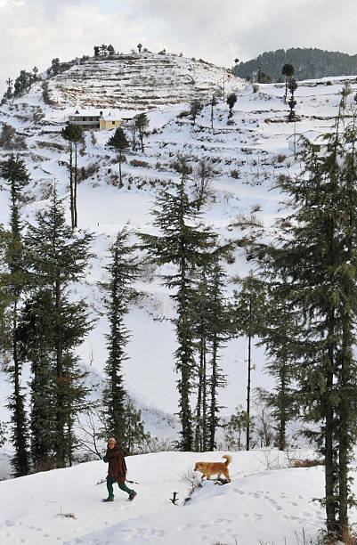
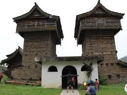
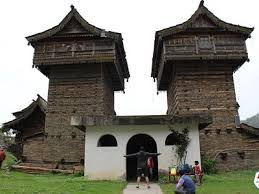

DISCOVER AMAGING PLACES
Sirmour the plach bowl of india is a historical and cenic district
in himachal preadesh rich in rajput
history featuring the high attitude churdhar peak
abd the sacred Renuka lake.
Book Now

About Sirmaur
Recent headlines for Sirmaur, Himachal Pradesh, focus heavily on a tragic bus
accident in a gorge, with reports on casualties (around 14-15), investigation orders
(Deputy CM), rescue efforts, community aid, and road safety issues, alongside news of
local culture (Giripar folk dances), environmental concerns (cloudbursts/landslides in
past years), and unique traditions like polyandry. Key sources for current updates include
Dainik Bhaskar (Dainik Bhaskar),
Jagran (Jagran), and Aaj Tak (Aaj Tak).
The rich history of Sirmour
Sirmour, a region in Himachal Pradesh with deep historical roots, was a
significant princely state
established by Raja Rasalu around the 11th century,
evolving from ancient Kulinda tribes, with its name
linked to dominance or Sirmouri
Taal, and saw rule by Rajputs, Gurkhas, and later British
influence,leaving
behind forts,
temples,and tales of cultural clashes and royal lineage, notably connected to the Sikh
Gurus
and the Jaipur
Royals.
More about sirmour history
 

World-class
sporting event
we've hosted
Sirmour district in Himachal Pradesh has rapidly
emerged as a hub for both competitive sports and
high-energy collegiate athletic events.
significant